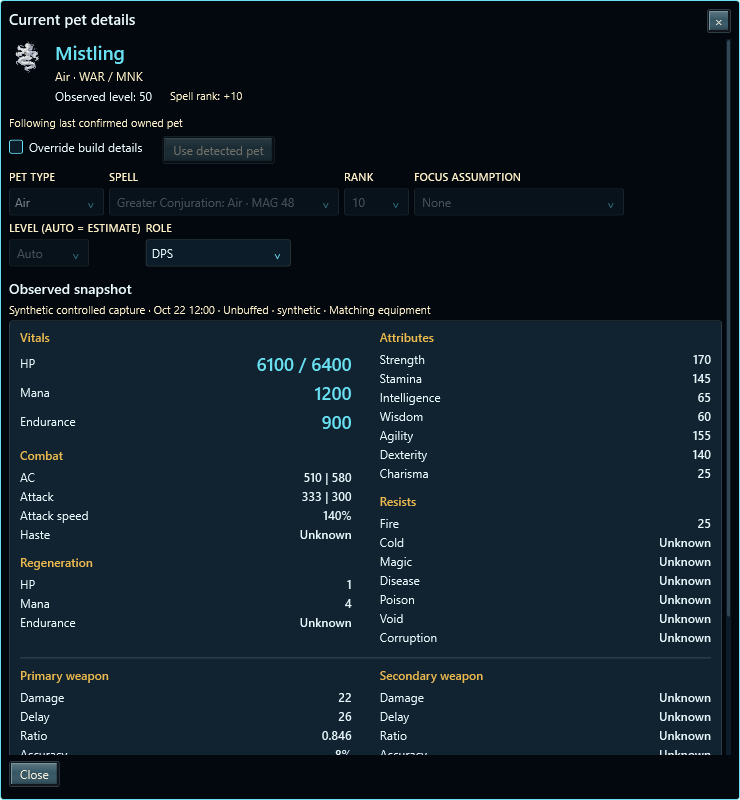
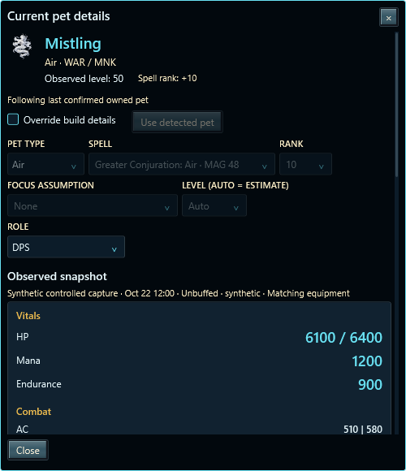
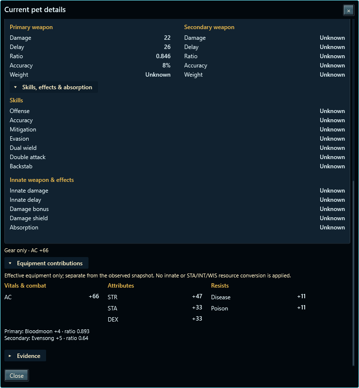
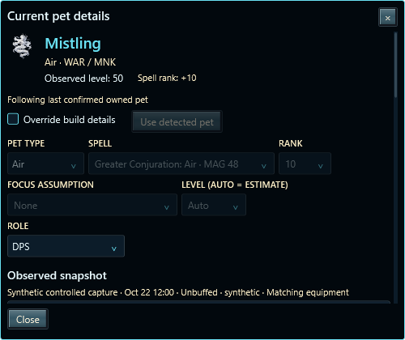
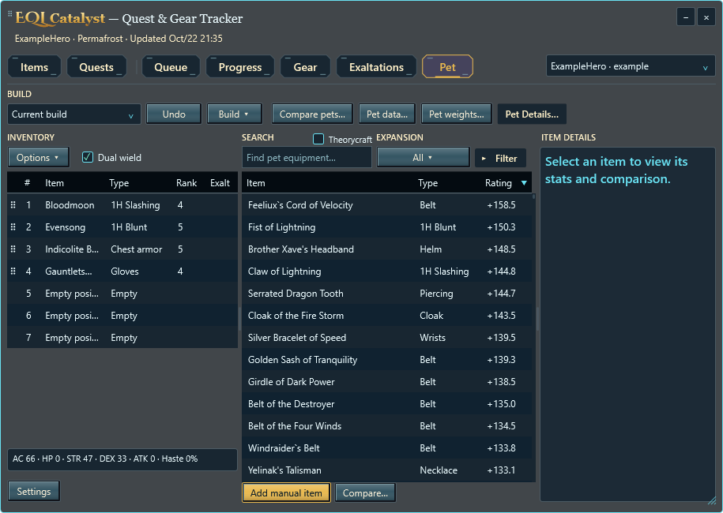

Compact EQ-style sections replace the statistics table. Summon settings stay above the sheet; equipment contributions and full evidence stay separate below. The 28-DIP Pet Details action restores the flat disclosure appearance without a dropdown arrow.
Observed level is separate from spell rank. Missing stats and resists remain Unknown; displayed resource pairs and AC/Attack pairs preserve recorded values. Current follows confirmed summons; planned contexts remain independent.

Sections stack and use the window's outer scrollbar. Close remains fixed.




24 data tests, 16 research regressions and 35 WPF checks in each build configuration. Synthetic captures only. Broad theme/DPI review remains deferred.